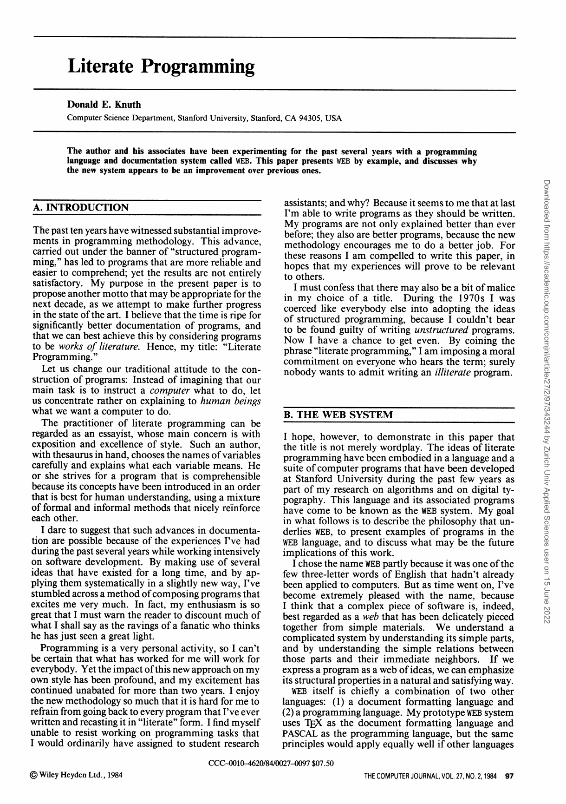
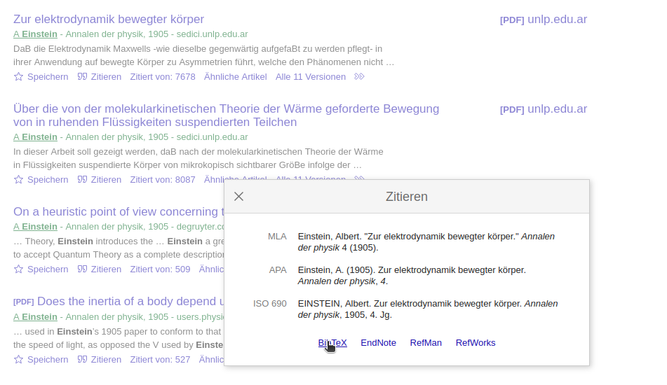

Quarto Schulung
2024-02-13
Heute
Ablauf
- Plaintext, Markup and Markdown
- Pandoc
- Quarto
- HTML und das Web
- Quarto Advanced
- Quarto Professional
- (Versionskontrolle mit Git und GitHub)
Ziele
- Vorteile einfacher Textdokumente kennen
- Basics von Markdown kennen
- Basics von Quarto kennen
- Quarto Advanced Features
- Quarto Professional Features
- (Kollaboration mit Git und GitHub)
Links
Origins

Origins

I’ve stumbled across a method of composing programs that excites me very much.
In fact, my enthusiasm is so great that I must warn the reader to discount much of what I shall say as the ravings of a fanatic who thinks he has just seen a great light.
I chose the name WEB partly because it was one of the few three-letter words of English that hadn’t already been applied to computers.
Plaintext, Markup und Markdown
Weniger ist mehr
Vorteile reiner Textfiles (plain text)
- Plattformunabhängigkeit
- Geringe Dateigröße
- Einfache Handhabung
- Versionskontrolle
- Langfristige Kompatibilität
- Suchbarkeit
- Leichte Integration
Was ist eine Markup Sprache?
- Auszeichnungssprache zur Strukturierung von Texten
- Maschinenlesebar (Verwendung von Tags / Symbolen)
- Klare Trennung von Inhalt und Formatierung
- What you see is what you mean (WYSIWYM)
Was für Markup Sprachen gibt es?
| Sprache | Beispiel |
|---|---|
| HTML | <b>Fetter Text</b> |
| LaTeX | \textbf{Fetter Text} |
| Markdown | **Fetter Text** |
Was ist Markdown?
- Leichtgewichtige Markup-Sprache für einfaches Textformatieren
- Einfach zu erlernen
- Maschinenlesbar und Menschenlesbar
- Frontend für Latex / HTML
Markdown Syntax
# A story of a fox
The *quick* brown fox **jumps** over the lazy [dog](https://en.wikipedia.org/wiki/Dog).
Texteditor
Ein guter Texteditor ist wichtig!! Empfehlungen:
- VSCode: code.visualstudio.com ← Quarto Extension installieren!
- RStudio: posit.co/download/rstudio-desktop/
- (Pulsar: pulsar-edit.dev) ← Keine Eigenen Erfahrungen
Übung Markdown 🛠️
- Konvertiere deinen mitgebrachten Text in Markdown.
Pandoc
Was ist Pandoc?
- Open-Source-Tool zur Konvertierung von Markup-Sprachen
- Kein grafisches Userinterface (GUI), wird über den Terminal bedient (cli-tool)
- Vielfältige Ein- und Ausgabeformate
- Es gibt GUI Wrappers für Pandoc, z.B. Pandoc-GUI oder Pandwriter
If you need to convert files from one markup format into another, pandoc is your swiss-army knife. Pandoc can convert between the following formats

- Input: docx, odt, epub, html, markdown, latex, rtf, typst, wiki
- Output: (Inputs plus:) pdf
Übung Pandoc 1 🛠️
Installiert Pandoc von pandoc.org (MSI installer).
Öffnet ein Terminal im Folder, wo ihr das Markdown File erstellt habt
Konvertiert das eben erstellte Markdown File in html mit folgendem Command:
- Der Befehl
pandocruft das Commandline Tool pandoc auf - Das Argument
markdown.md:- Ist ein sogenanntes Positionalargument (engl: positional argument)
- Gilt als Input File
- Die Markup Sprache des Input Files wird von der Dateierweiterung inferiert (
.md= Markdown) - Da wir kein Output-Format definiert haben, wird standartmässig
htmlherausgegeben
Übung Pandoc 2 🛠️
-o output.html:- ist ein named argument
- definiert das Output File
- Die Markup Sprache des Output files wird von der Dateierweiterung inferiert (
.html) - Betrachtet das html Files sowohl im Texteditor wie auch im Browser
Übung Pandoc 3 🛠️
Konvertiert euer mitgebrachtes docx File
- 1x in Markdown (Betrachten im Texteditor)
- 1x in html (Betrachten im Texteditor und im Browser)
Terminal und cli-Programme
Die Verwendung von Commandline-Programmen (cli) ist eine wichtige und nützliche Fähigkeit
cli Tools verfügen meist über eine eingebaute Hilfestellung (
-h/--help)pandoc [OPTIONS] [FILES] -f FORMAT, -r FORMAT --from=FORMAT, --read=FORMAT -t FORMAT, -w FORMAT --to=FORMAT, --write=FORMAT -o FILE --output=FILE --data-dir=DIRECTORY -M KEY[:VALUE] --metadata=KEY[:VALUE] --metadata-file=FILE -d FILE --defaults=FILE --file-scope[=true|false] --sandbox[=true|false] -s[true|false] --standalone[=true|false] --template=FILE ...die Hilfestellungen sind etwas gewöhnungsbedürftig, dafür aber umfangreich
Terminal und cli-Programme
Der Umgang mit dem Terminal ist eine wichtige und nützliche Fähigkeit.
- mit
cdkann man in Folders hinein navigieren (cd Documents) - mit
cd ..kann man aus Folders hinaus navigieren - das aktuelle Verzeichnis anzeigen lassen
- Windows:
echo %cd% - Linux / Mac:
pwd
- Windows:
- mit
mkdirkann man ein Verzeichnis erstellen (mkdir verzeichnis)
Quarto
Was ist Quarto?
- Ebenfalls ein Open-Source cli tool
- Baut auf Markdown und Pandoc auf 
- Erweitert die standart Markdown-Sprache mit nützlichen Elementen (z.B. Callout Blocks)
- Integriert die Integration von Code (R, Python, Julia, SQL…)
- Liefert ansprechende out-of-the-box Templates
Ausgabeformate
html: Books, Slides, Blogs…pdf: Books, Slidesepub: Booksword: Bookspptx: Slides
Übung Quarto 1 🛠️
Installiert quarto quarto.org
Öffnet ein Terminal im Folder, wo ihr mit Pandoc docx → md konvertiert habt
Konvertiert das Markdown File in html mit folgendem Command:
renderist eine Funktion des Programmsquarto- Auch hier ist
markdown.mdein positionales Argument - Der Output ist (wenn nicht anders definiert) ein HTML-File
Übung Quarto 2 🛠️
Übung Quarto 3 🛠️
- Erstellt ein pdf File aus eurem Markdown
- Installiert dafür (falls nötig)
tinytex
HTML und das Web
HTML vs PDF
- Der bisherige de facto Standart für Lehrmaterialien: PDFs via Moodle
- PDFs haben Vorteile, aber auch viele Limitierungen
Vorteile
- ✅ Formatierung (Drucken)
- ✅ single-file
- ✅ Offline nutzbar
Nachteile
- 🚫 öffentliche Wahrnehmung (OER)
- 🚫 responsiv für verschiedene devices (BYOD)
- 🚫 interaktiven Elemente
- 🚫 Übersetzbarkeit (Deutsch ↔︎ Englisch)
- 🚫 Accessibility-Features (z.B. Screen Readers)
HTML veröffentlichen
- HTML Files können offline gespeichert / geteilt werden → unüblich und ungewohnt
- Sinnvoller / üblicher: Gehostete Webseiten erstellen
- Viele Möglichkeiten:
- GitHub Pages (ZHAW Internes GitHub)
- Netlify
- Posit Connect (ZHAW Internes Posit Connect)
- QuartoPub
- Confluence (ZHAW Internes Confluence)
Übung HTML veröffentlichen 1 🛠️
Netlify Drop
- Öffnet die Website app.netlify.com/drop (kein Login nötig)
- Drag-and-drop den Ordner mit dem HTML Outputfile aus der Übung Quarto
- Wartet bis der Upload fertig ist und im Deploy log Complete angezeigt wird
- Klick auf Open production deploy
- Die Website befindet sich auf irgendwas.netlify.app/filename.html
- filename.html muss noch hinzugefügt werden!
- dies kann vermieden werden, wenn statt filename.html index.html verwendet wird
Übung HTML veröffentlichen 1 🛠️
Netlify Drop
Diese Methode ist zwar sehr einfach, aber:
- Ohne Login ist Veröffentlichung zeitlich beschränkt → mit Login unbeschränkt
- Benötigt drag-and-drop → Kommandozeile
quarto publish netlify - URL ist wenig ansprechend → Mit
CNAMEeigener Domain (siehe dxi.ai)
Übung HTML veröffentlichen 2 🛠️
ZHAW Posit Connect
Logged auch mit dem ZHAW Benutzername / Kürzel auf dem Server ein:
statistik-ide.zhaw.ch/rsconnectKlickt auf eure Mailadresse rechts Oben und wählt “API Keys”
Erstellt einen neuen API Key und gibt ihm einen sinnvollen Namen (z.B.
zhaw laptop)Kopiert den API Key in die Zwischenablage
Gebt im Terminal folgenden Befehl ein
Danach sollte ein Browserfenster mit eurem Inhalt erscheinen
- spezifische Freischaltung möglich
- URL unschön → wenigstens ein ZHAW subdomain
Quarto Advanced
YAML Header
YAML: YAML Ain’t a Markup Language
Eine maschinen- und menschenlesbare Art, strukturierte Daten zu speichern
Ein Beispiel:
In Quarto: Metadaten festhalten (z.B. Titel, Autor und Datum)
Wird zu Beginn des Dokuments eingefügt und mit
---umschlossen
Übung YAML Header 1 🛠️
- Fügt eurem Markdown File Metadaten mittels YAML Header hinzu
Übung YAML Header 2 🛠️
Übung YAML Header 3 🛠️
Übung Querverweise 🛠️
- Fügt ein Querverweis auf ein Bild ein. Z.B:
- siehe Abbildung 1
- (quarto.org → Guide → Authoring → Scholarly Writing → Cross-References)
Übung Querverweise 🛠️
- Fügt ein Querverweise auf eine Kapitelmarke ein. Z.B.
- siehe Kapitel 6.6
- (quarto.org → Guide → Authoring → Scholarly Writing → Cross-References)
- Kapitelmarken erhalten ein
{#sec-} - Kapitel werden (aktuell) nur mit Nummern referenziert
- im YAML header:
number-sections: true - Siehe https://github.com/quarto-dev/quarto-cli/issues/1196
- im YAML header:
Übung Subfigures 🛠️
- In Quarto können Figures aus Subfigures bestehen
- Siehe: quarto.org → Guide → Authoring → Figures → Subfigures
- Erstellt ein Subfigure Layout, ähnlich wie das folgende:
Übung Tabellen 🛠️
- Tabellen sind in Markup Sprachen etwas umständlich
- Vor allem, wenn sie häufig editiert / aktualisiert werden
- → In diesem Fall empfiehlt sich die Verwendung von R / Python Codeblocks
- Für einfache bzw. sich nicht verändernde Tabellen ist der Markup Syntax ausreichend
- Für den Export aus Excel: tablesgenerator.com
- Es gibt 3 Syntax Formen:
- Pipe Tables
- Grid Tables
- HTML Tables
Übung Tabellen 🛠️
- Sind sehr einfach im Syntax dafür etwas beschränkt in den Features
- quarto.org → Authoring → Tables
Pipe Table
| fruit | price |
|:-------|--------:|
| apple | 2.05 |
| pear | 1.37 |
| orange | 30.09 |
: Eine "pipe" Tabelle {#tbl-pipe}| fruit | price |
|---|---|
| apple | 2.05 |
| pear | 1.37 |
| orange | 30.09 |
Übung Tabellen 🛠️
Grid Tables
- Haben mehr features
- sind etwas umständlicher zu schreiben
- quarto.org → Authoring → Tables
+-----------+-----------+--------------------+
| Fruit | Price | Advantages |
+===========+===========+====================+
| Bananas | $1.34 | - built-in wrapper |
| | | - bright color |
+-----------+-----------+--------------------+
| Oranges | $2.10 | - cures scurvy |
| | | - tasty |
+-----------+-----------+--------------------+
: Sample grid table.Übung Tabellen 🛠️
- Fügt in eurem Bericht eine Tabelle ein
- Verwendet dazu (bei Bedarf) tablesgenerator.com
Übung Zitieren 🛠️
- Quarto erleichtet das Zitieren und Erstellen von Literaturverzeichnissen
- Die Metadaten der Literatur wird in sog. Bibtex-Keys gespeichert
- Bibtex-Keys können aus GoogleScholar usw. exportiert oder via Browseraddin generiert werden.
Übung Zitieren 🛠️
Übung Zitieren 🛠️
@article{einstein1905,
title={Zur Elektrodynamik bewegter Körper},
author={Einstein, Albert},
journal={Annalen der physik},
volume={4},
year={1905}
}Dieser Bibtex-Keys werden in einem File abgespeichert, z.B
literatur.bibDas Bibtex-File wird über den YAML Header ins Quartodokument eingebunden:
Über die ID kann der Eintrag nun Zitiert werden:
Folgender Eintrag:
Wird zu: Einstein (1905) postulierte…
Viele Formen stehen zur Verfügung. Siehe: quarto.org → Guide → Authoring → Scholarly Writing → Citations and Footnotes
Übung Zitieren 🛠️
- Fügt eurem Dokument eine Referenz sowie ein Litearturverzeichnis hinzu
Quato Professional
Quarto Projects
Von einem File auf viele Files
Setup:
- Quarto-Konfigurationsdatei:
_quarto.yaml index.qmd(ohne YAML Header)- Optional: Weitere qmd-Files, die über
_quarto.yamleingebunden werden
- Quarto-Konfigurationsdatei:
Quarto Projects
project:
type: book
preview:
port: 5678
execute-dir: project
pre-render: pre-render.r
lang: de
format:
html:
theme:
dark: [darkly, custom-dark.scss]
light: [flatly, custom-light.scss]
css:
- custom.css
- theme-custom.scss
#- presenter-mode.css
bibliography: bibliography.bib
number-sections: false
code-tools:
source: false
include-in-header:
- script.html
execute:
freeze: true
error: false
message: false
warning: false
knitr:
opts_chunk:
collapse: true
#tidy: true
book:
title: "Research Methods HS23"
sidebar:
logo: images/zhaw_sw_neg.png
collapse-level: 1
style: floating
reader-mode: true
# globbing would be cool. Wait for
# https://github.com/quarto-dev/quarto-cli/issues/2120 or
# https://github.com/quarto-dev/quarto-cli/issues/1917 to be resolved
chapters:
- index.qmd
- part: PrePro.qmd
chapters:
- prepro/Prepro1_Vorbereitung.qmd
- --
- prepro/Prepro1_Demo.qmd
- prepro/Prepro1_Uebung.qmd
- --
- prepro/Prepro2_Demo.qmd
- prepro/Prepro2_Uebung_A.qmd
- prepro/Prepro2_Uebung_B.qmd
- --
- prepro/Prepro3_Demo.qmd
- prepro/Prepro3_Uebung.qmd
- part: InfoVis.qmd
chapters:
- infovis/Infovis1_Vorbereitung.qmd
- --
- infovis/Infovis1_Demo.qmd
- infovis/Infovis1_Uebung.qmd
- infovis/Infovis1_Script_eda.qmd
- --
- infovis/Infovis2_Uebung_A.qmd
- infovis/Infovis2_Uebung_B.qmd
- part: Stat1-4.qmd
chapters:
- stat1-4/Statistik1_Vorbereitung.qmd
- --
- stat1-4/Statistik1_Demo.qmd
- stat1-4/Statistik1_Novanimal.qmd
- stat1-4/Statistik1_Uebung.qmd
- stat1-4/Statistik1_Loesung.qmd
- --
- stat1-4/Statistik2_Demo.qmd
- stat1-4/Statistik2_Uebung.qmd
- stat1-4/Statistik2_Loesung_Beispiel.qmd
- stat1-4/Statistik2_Loesung_1.qmd
- stat1-4/Statistik2_Loesung_2223s.qmd
- stat1-4/Statistik2_Loesung_23n.qmd
- --
- stat1-4/Statistik3_Demo.qmd
- stat1-4/Statistik3_Uebung.qmd
- stat1-4/Statistik3_Loesung.qmd
- --
- stat1-4/Statistik4_Demo.qmd
- stat1-4/Statistik4_Uebung.qmd
- stat1-4/Statistik4_Loesung_1.qmd
- stat1-4/Statistik4_Loesung_2n.qmd
- stat1-4/Statistik4_Loesung_2s.qmd
- part: Stat5-8.qmd
chapters:
- stat5-8/Statistik5_Vorbereitung.qmd
- --
- stat5-8/Statistik5_Demo.qmd
- stat5-8/Statistik5_Uebung.qmd
- stat5-8/Statistik5_Loesung_1.qmd
- stat5-8/Statistik5_Loesung_2.qmd
- --
- stat5-8/Statistik6_Demo.qmd
- stat5-8/Statistik6_Uebung.qmd
- stat5-8/Statistik6_Loesung.qmd
- --
- stat5-8/Statistik7_Demo.qmd
- stat5-8/Statistik7_Uebung.qmd
- stat5-8/Statistik7_Loesung.qmd
- --
- stat5-8/Statistik8_Demo.qmd
- stat5-8/Statistik8_Uebung.qmd
- stat5-8/Statistik8_Loesung.qmd
- part: StatKons.qmd
chapters:
- statKons/StatKons0_Vorbereitung.qmd
- --
- statKons/StatKons1_Demo_assoziationen.qmd
- statKons/StatKons1_Demo_open_datasets.qmd
#- statKons/StatKons1_Demo_suggest_datasets.qmd
- --
- statKons/StatKons2_Demo_PCA.qmd
- --
- statKons/StatKons3_Demo_LM.qmd
- --
- statKons/StatKons4_Demo_GLM.qmd
- part: RaumAn.qmd
chapters:
- rauman/Rauman0_Vorbereitung.qmd
- --
- rauman/Rauman1_Uebung_A.qmd
- rauman/Rauman1_Uebung_B.qmd
- --
- rauman/Rauman2_Uebung_A.qmd
- rauman/Rauman2_Uebung_B.qmd
- --
- rauman/Rauman3_Uebung_A.qmd
- rauman/Rauman3_Uebung_B.qmd
- rauman/Rauman3_Uebung_C.qmd
- --
- rauman/Rauman4_Uebung_A.qmd
- --
- rauman/Rauman5_Uebung_A.qmd
- rauman/Rauman5_Uebung_B.qmd
- part: "Fallstudie S"
chapters:
- fallstudie_s/0_Vorbereitung.qmd
- --
- fallstudie_s/1_Einführung.qmd
- fallstudie_s/2_Besuchermonitoring.qmd
- --
- fallstudie_s/3_Aufgabenstellung_WPZ.qmd
- --
- fallstudie_s/4_Projektierung.qmd
- fallstudie_s/5_Datenverarbeitung.qmd
- fallstudie_s/6_Deskriptive_Analysen.qmd
- fallstudie_s/7_Multivariate_Modelle.qmd
- part: "Fallstudie N"
chapters:
- fallstudie_n/1_Vorbemerkung.qmd
- fallstudie_n/2_Datenverarbeitung.qmd
- fallstudie_n/3_Berechnung_Homeranges.qmd
- fallstudie_n/4_Multivariate_Modelle.qmd
- fallstudie_n/5_Variablenselektion.qmd
- fallstudie_n/6_Guete_und_Diagnostics.qmd
#- --
#- fallstudie_n/7_Modelle_mit_Nutzungsintensitaet.qmd
- "References.qmd"Versionskontrolle mit Git und GitHub
Git(Hub)
- Git: Verteiltes Versionskontrollsystem
- GitHub: Webplattform für Hosting von Git-Repositories.
Git Workflow
Add: Sammelt ÄnderungenCommit: Speichert eine Version mit Änderungen.Push: Hochladen von lokalen Commits ins Remote Repository.Pull: Abrufen und Einpflegen von Änderungen aus dem Remote Repository.Pull Request: Anfrage zur Überführung von Änderungen zwischen Branches.Merge Conflict: Problem bei der automatischen Zusammenführung von Branches.Issue: Verfolgung von Problemen, Vorschlägen oder Aufgaben in Projekten.
Übung
Forkt die Übungsunterlagen von Fit-mit-Markdown- Bearbeitet etwas im einem Dokument
Commitet undPusht die Änderungen- Erstellen Sie einen Merge Request auf GitHub
- Verwenden Sie dazu die Hilfe von fit-mit-markdown.github.io/